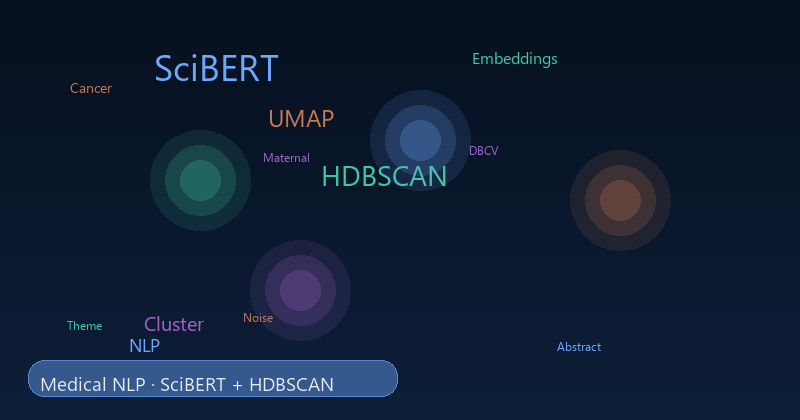
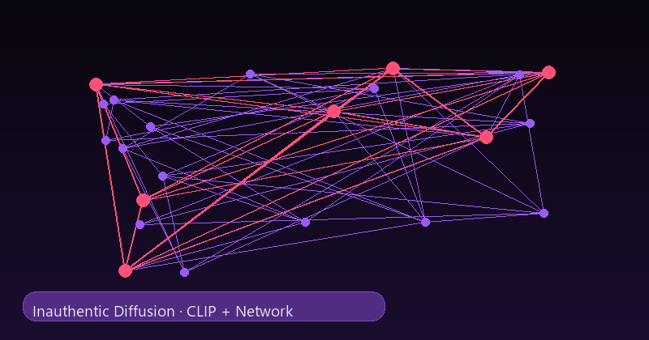
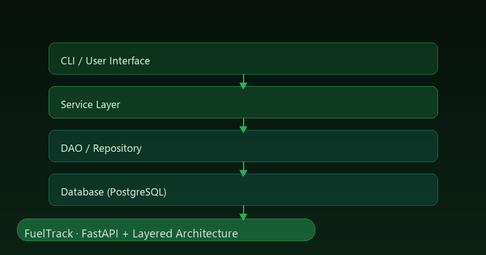
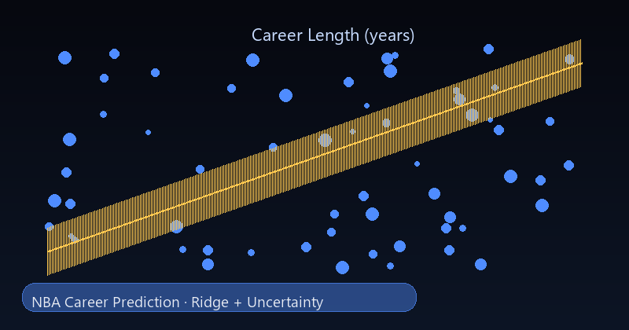
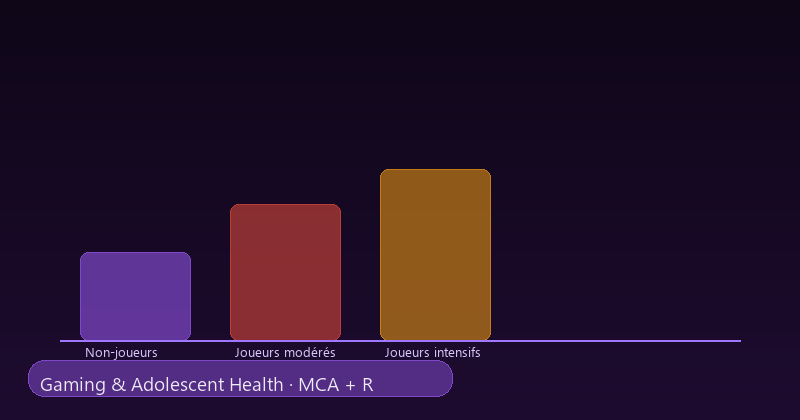
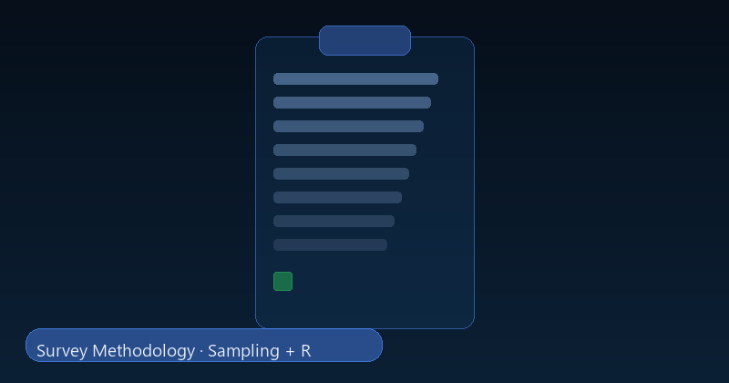
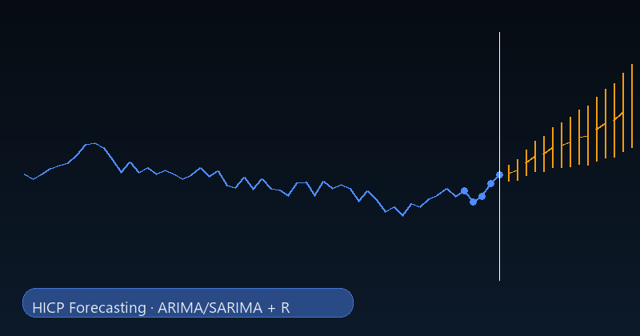

From Medical Texts to Meaningful Patterns
Why TF-IDF was not enough for long biomedical abstracts, and how SciBERT + UMAP + HDBSCAN revealed four interpretable themes.
These projects were completed throughout my academic training and now include clearer context on the problem, the methodology, and the main results.

Why TF-IDF was not enough for long biomedical abstracts, and how SciBERT + UMAP + HDBSCAN revealed four interpretable themes.

How synchronized image diffusion was studied with CLIP, temporal networks, and clustering to detect coordinated behavior.

A layered fuel-price application built for non-technical and technical users, from data ingestion to analysis and deployment.

How player features, position, and age were turned into a predictive model with uncertainty-aware evaluation.

A public-health study of gaming habits and adolescent health using exploratory analysis, MCA, and association tests.

A complete survey workflow, from question design and sampling to digital collection and analysis-ready data.

A comparison of classical forecasting approaches for monthly inflation data, with model selection and evaluation.
Statistical Foundations → Survey Methodology → Public Health Statistics → Machine Learning → Software Engineering → Computer Vision & Network Science → NLP & Unsupervised Learning.

Data Scientist & Machine Learning Engineer